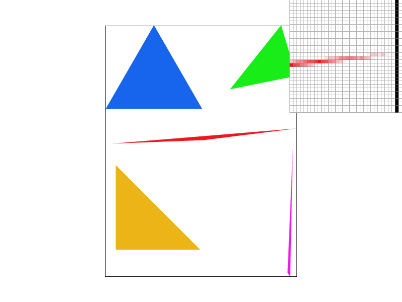
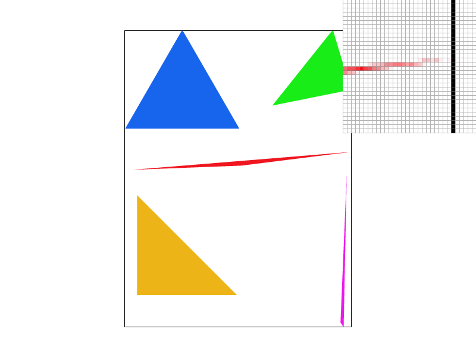
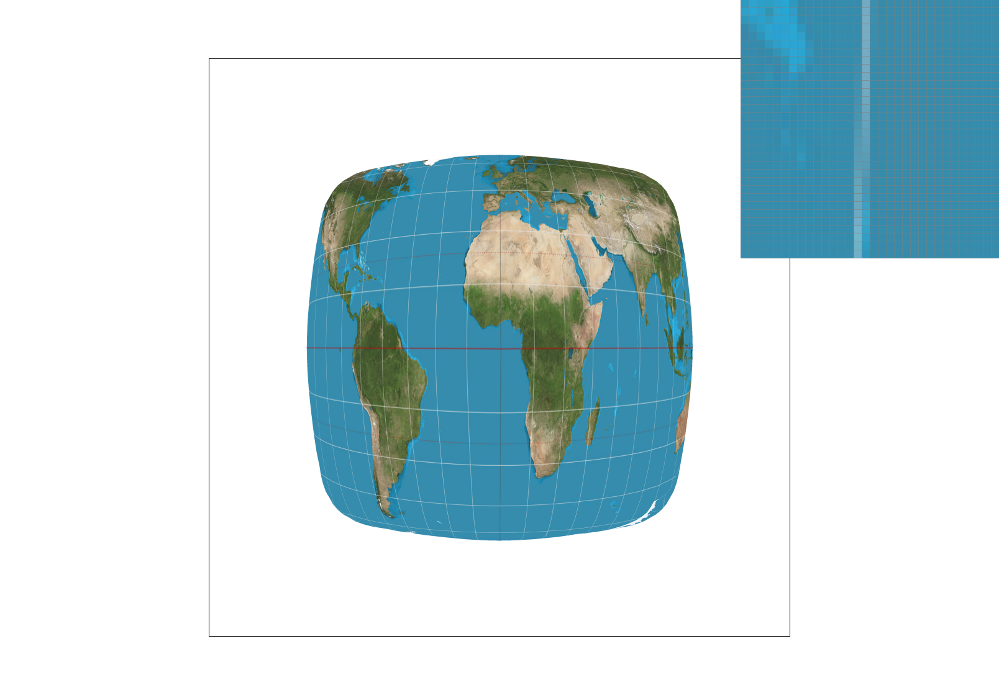
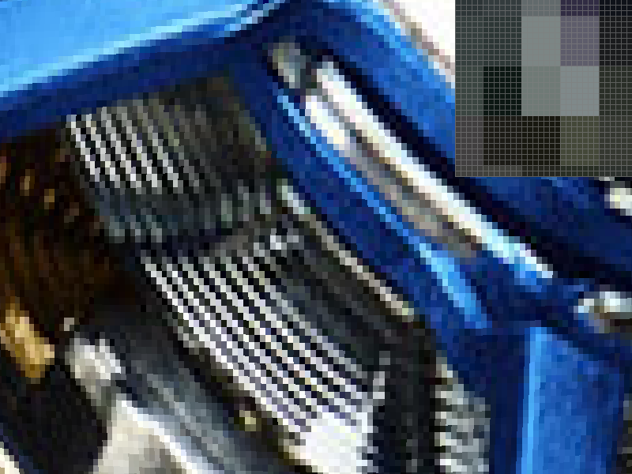

CS184/284A Spring 2026 ¡ª Homework 1: Rasterizer (Write-Up)
Overview
In this assignment I built a software rasterization pipeline for SVGs: triangle rasterization, antialiasing via supersampling, hierarchical transforms, barycentric interpolation for smoothly varying vertex attributes, and texture mapping with both pixel sampling (nearest/bilinear) and mipmap level sampling (L0/nearest/linear between levels). The most ¡°aha¡± moment for me was seeing how the same barycentric machinery powers both color interpolation and texture mapping, and how mip levels fix minification aliasing that supersampling alone doesn¡¯t solve.
Task 1: Drawing Single-Color Triangles
Approach
I rasterize a triangle by iterating over the pixels inside its axis-aligned bounding box. For each pixel center \((x+0.5, y+0.5)\), I run a point-in-triangle test using edge functions. If the sample is inside all three half-planes, the pixel is filled with the triangle¡¯s color.
Why this is no worse than checking the whole bounding box
Any ¡°brute force¡± triangle rasterizer that checks every sample in the bounding box must at minimum visit all pixels in that bounding box. My algorithm does exactly one inside-test per pixel sample in that same region, so it is the same asymptotic work (and typically faster in practice with simple math and early bounds).
svg/basic/test4.svg with default view + pixel inspector centered on an interesting edge/corner.
Task 2: Antialiasing by Supersampling
Data structure + pipeline changes
I implemented supersampling by storing sample_rate sub-samples per pixel in a separate
sample_buffer of size width * height * sample_rate.
Triangles write coverage into sub-samples instead of directly writing one color per pixel.
At the end, resolve_to_framebuffer() averages the sub-samples for each pixel and writes the final RGB
into the display framebuffer.
Sampling pattern
For each pixel in the triangle bounding box, I sample a \(\sqrt{sample\_rate} \times \sqrt{sample\_rate}\) grid inside the pixel. Each sub-sample reuses the same edge-function inside test; if inside, I write the triangle color into that sub-sample. Points/lines aren¡¯t supersampled; for those I fill all sub-samples of the pixel with the same color so borders remain visible.
Why supersampling helps
With 1 sample/pixel, an edge pixel is either fully inside or outside, which creates hard jagged edges. With multiple sub-samples, edge pixels can be partially covered (some hit, some miss), and averaging those sub-samples produces smoother antialiased edges.

|
|

|
As the sample rate increases, the rasterizer gets a more accurate estimate of coverage near thin geometry and sharp corners. This reduces jaggies and makes edges look smoother and more stable.
Extra Credit: Jittered stratified sampling (optional)
I also tried jittered stratified sampling: still one sample per grid cell, but with a small deterministic random offset inside each cell. Compared to a perfect grid, jitter can reduce structured aliasing patterns on very thin features, making artifacts look more noise-like instead of repeating stair-step patterns.
|

|
|
Both images use the same sample rate and view. The jittered version slightly breaks up regular aliasing patterns along thin edges, while the grid version can show more structured sampling artifacts.
Task 3: Transforms
Implementation
I implemented translate, scale, and rotate as 3¡Á3 matrices in homogeneous coordinates
following the SVG spec. Rotation uses degrees (converted to radians) and constructs the standard 2D rotation matrix.
Custom robot SVG
For my_robot.svg, I edited the hierarchical groups so the cubeman has a more interesting pose (e.g., a ¡°wave¡± pose)
by rotating an arm segment around the shoulder/elbow and slightly tilting the head. Because transforms are hierarchical,
rotating a parent group naturally moves its child shapes together.
my_robot.svg (custom pose).
Extra Credit: Rotate the viewport with keyboard
I added a simple GUI feature to rotate the entire viewport: pressing [ rotates left and ] rotates right
(and R resets). Implementation-wise, I insert an extra rotation matrix in NDC space (around the center of the screen)
by translating to \((0.5,0.5)\), rotating, then translating back, and composing it into the existing
svg_to_ndc ¡ú ndc_to_screen matrix stack.

Task 4: Barycentric coordinates
Explanation
Barycentric coordinates express any point \(P\) inside a triangle as a weighted combination of its vertices: \[ P = w_0 A + w_1 B + w_2 C,\quad \text{where } w_0+w_1+w_2=1. \] Intuitively, each \(w_i\) measures how close \(P\) is to the opposite edge: closer to vertex \(A\) means larger \(w_0\), etc. These same weights can interpolate attributes like color or texture coordinates smoothly across the triangle.
svg/basic/test7.svg (color wheel) with default viewing parameters and sample rate 1.
Task 5: ¡°Pixel sampling¡± for texture mapping
What pixel sampling means
Texture mapping gives each triangle vertex a \((u,v)\) coordinate in texture space. For each covered pixel sample in screen space, I compute the corresponding \((u,v)\) by barycentric interpolation, then fetch a color from the texture. ¡°Pixel sampling¡± describes how we turn a continuous \((u,v)\) into a discrete texel color.
Nearest vs bilinear
- Nearest: pick the closest texel to \((u,v)\). Fast, but blocky and can shimmer/alias.
- Bilinear: sample the four neighboring texels and interpolate by the fractional part in x/y. Smoother, reduces blockiness.
Below are the four required comparisons (same scene/spot), toggling pixel sampling (P) and sample rate (=/-).

|
|
|
|

|
Comments
Bilinear sampling most clearly beats nearest when the texture has high-frequency detail (sharp lines/text) and the triangle maps those details onto screen pixels at fractional texel positions. Supersampling (higher sample rate) helps with geometric edges, but nearest sampling can still look blocky inside the polygon; bilinear directly smooths the texture lookup itself.
Task 6: ¡°Level sampling¡± with mipmaps for texture mapping
What level sampling means
Mipmaps store prefiltered versions of the texture at decreasing resolutions. When a textured surface is far away (minified), many texels map into a single pixel, causing heavy aliasing if we always sample level 0. Level sampling chooses an appropriate mip level based on the footprint of a pixel in texture space (estimated using \((du/dx, dv/dx)\) and \((du/dy, dv/dy)\)).
How I computed the mip level
In rasterize_textured_triangle, for each pixel sample I compute \((u,v)\) at \((x,y)\), \((x+1,y)\), and \((x,y+1)\)
via barycentric interpolation and store them as p_uv, p_dx_uv, p_dy_uv.
In get_level, I compute differences, scale by texture width/height, take the larger magnitude footprint,
then compute \(L = \log_2(\text{footprint})\).
Tradeoffs: supersampling vs pixel sampling vs level sampling
- Supersampling: strongest for geometric antialiasing, but costs extra memory/time proportional to sample rate.
- Pixel sampling (nearest/bilinear): affects how we interpolate within one mip level; bilinear is smoother but slightly slower.
- Level sampling (mipmaps): fixes minification aliasing efficiently; costs extra memory for mip pyramid but improves quality a lot when zoomed out.
Four required comparisons (using my own PNG texture)
I used my own PNG (pic1.png) by copying a texmap SVG and changing the <texture filename="...">
to point to my PNG. Below are the required combinations (toggle P for pixel sampling, L for level sampling).
|

|

|

|

|
Comments
When the texture is minified, L_ZERO tends to shimmer/alias because it samples high-frequency details that are too fine for the pixel grid. Choosing a lower-resolution mip level (L_NEAREST) dramatically stabilizes the result by prefiltering the texture. Combining L_NEAREST with bilinear pixel sampling usually looks the smoothest for general viewing (and trilinear would be even smoother when using L_LINEAR between mip levels).
(Optional) Extra Credit Notes
Extra credit items I included in this write-up: (1) jittered supersampling comparison (Task 2), and (2) viewport rotation hotkeys (Task 3).